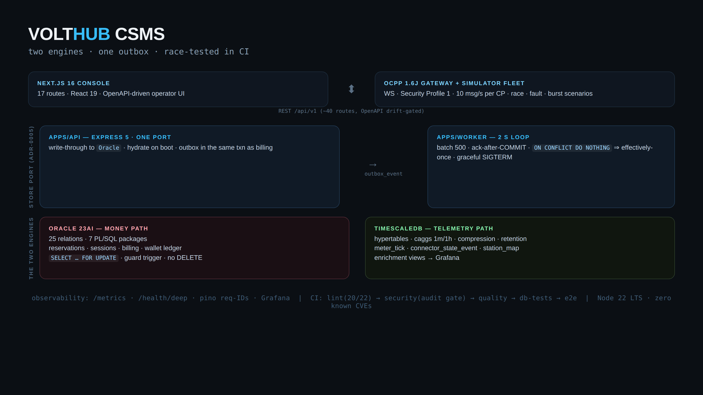

An open-source EV charging management system where Oracle 23ai owns the money path and TimescaleDB owns telemetry — joined by an outbox + relay, with the concurrency re-proven on both engines at every push.
A modular monolith (ADR-0001): the Express API and the OCPP 1.6J WebSocket gateway share port :4000; a 2-second relay worker moves telemetry from the OLTP engine to the time-series engine. Every simplification is a documented decision, not an omission.

ADR-0005
Every route is written against createStore()'s surface. The in-process store is the test
double; Oracle wraps the same object with write-through PL/SQL package calls. Routes never know which
engine is behind them.
ADR-0003
meter_reading and outbox_event commit atomically. The relay delivers
at-least-once, the sink dedupes — billing never depends on TimescaleDB being up.
ORA-20501…209xx maps to HTTP 422/409/402 exactly once, in src/errors.js. The
same bands are raised by RAISE_APPLICATION_ERROR in PL/SQL and mirrored in JS.
The 30-second demo that sells the whole design: two clients reserve the same connector in the same window. Exactly one wins — proven against the in-process store and real Oracle row locks, in CI, on both engines.
Concurrency is asserted, not claimed. Parallel double-reserves and double-pays fire in CI; the suite fails unless exactly one wins. Source: apps/api/test/race.js
Money logic lives in PL/SQL, not app code. Seven packages own the writes; a guard trigger blocks direct connector.status UPDATEs. No DELETE grant exists anywhere.
Every claim has a receipt. docs/verification.md names what actually ran for each statement in the README — including what was measured and how.
Performance numbers stay out of prose. docs/perf.md carries the methodology + 5 reproducible experiments; tables only land from bench/ scripts.
Sessions and billing are ACID-relational. Meter ticks are immutable, time-ordered, and read as window aggregates — the wrong shape for a row-store. Each engine gets what it is good at; the store port keeps them swappable.
The short version of the trade-off table — the full one, with the accepted costs, lives in the README.
| Oracle 23ai | Row-lock semantics + PL/SQL packages own the money-path writes. Trade-off: a real Oracle dependency — so CI runs it as a service container every push. |
| TimescaleDB | Hypertables / caggs / compression are the right shape for immutable ticks. Trade-off: caggs query one hypertable — enrichment happens in query-time views + a relay-maintained station_map. |
| Outbox + relay | Same-transaction publication, ack-after-COMMIT relay, idempotent replay. Trade-off: single-writer worker, not a fan-out bus. |
| Express 5 + pino 10 | Boring, dependency-light API core; request-ID error envelopes; drift-gated OpenAPI. Trade-off: hand-rolled middlewares instead of a framework galaxy. |
| Next.js 16 + React 19 | App Router with real client components; CSP at the Next layer; zero chart dependencies. Trade-off: server/client boundary discipline is on the team. |
| Compose + Caddy | One honest VM deploy target with graceful SIGTERM draining. Trade-off: no Kubernetes story — by design, see ADR-0001. |
API on :4000, an OCPP 1.6J WebSocket session, and the Next.js operations console in "Grid Current". The GIF is re-recordable in one command from scripts/screenshots/.
If a reviewer disagrees with a choice, there is a document to disagree with — that is the point.
Money invariants stay inside one transaction boundary; sagas would hide the graded correctness.
Append-heavy, immutable, window-read ticks. Weighted matrix: 4.90 vs InfluxDB 3.95.
Atomic-with-write publication; dual-write diverges on crash; CDC is too heavy for scope.
Zero-build velocity; contracts carried by the OpenAPI drift gate + tests, not types.
Replacement, not rewrite: routes unchanged between engines; hermetic tests preserved.
Referential integrity enforced in the database, not in application code.
RemoteStart/RemoteStop/Reset with audit trail — the operator's hand on any session.